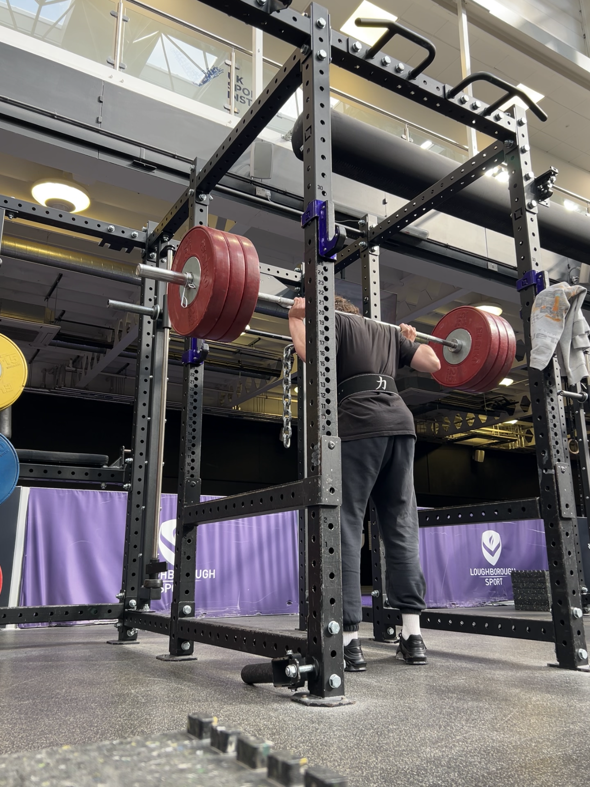
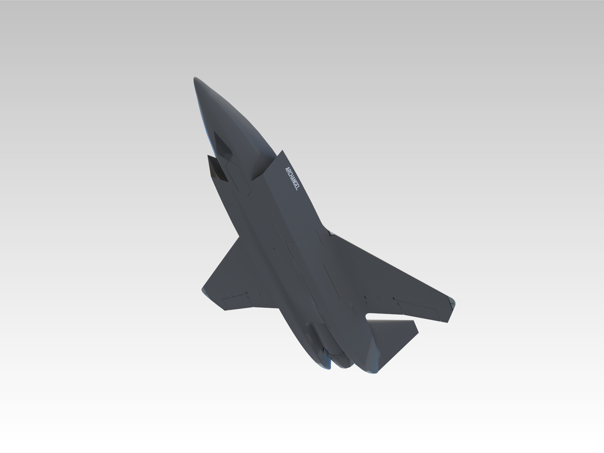
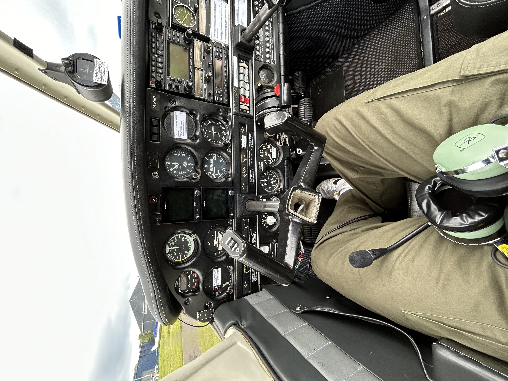

Competitive Powerlifting
Training has strengthened my discipline, consistency and ability to pursue demanding long-term goals through incremental progress.
About me
I am a final-year MEng Aeronautical Engineering student at Loughborough University, with a particular interest in defence aircraft design, autonomous UAS and advanced fighter-aircraft technologies.
My work combines CAD, aerodynamic and structural analysis, simulation, manufacturing and physical testing, with a focus on complex but compact mechanisms and integrated aircraft systems.
I am meticulous, organised and persistent. Ambitious personal and university projects have taught me to take a design from the attractive first concept through the less glamorous work of integration, test and failure investigation.

A working toolkit across the design-build-test loop, with aircraft design as the unifying focus.
Siemens NX · SolidWorks · CATIA · mechanical design · aircraft configuration design · complex mechanisms · design for manufacture
STAR-CCM+ · SU2 · XFLR5 · NASTRAN · CFD · FEA · aerodynamic analysis · flight-dynamics modelling
MATLAB · Simulink · Python · Excel · SQL · Power BI · Tableau · data processing · engineering visualisation
GasTurb 12 · turbomachinery design · aircraft performance · propulsion-system integration · annulus sizing
ArduPilot · Mission Planner · CubePilot / Pixhawk · sensor integration · autonomous-flight systems · flight-data analysis
Additive manufacture · composite structures · electronics integration · test planning · root-cause analysis · technical reporting
These interests reinforce the way I work: consistently, practically and with close attention to what is actually happening.

Training has strengthened my discipline, consistency and ability to pursue demanding long-term goals through incremental progress.

Flying a Piper PA-28 reinforced my interest in aircraft response, cockpit workload and the connection between design choices and pilot experience.
Photography sharpens my visual judgement and attention to small inconsistencies—useful habits in CAD, inspection and technical communication.
Formal training supports the project evidence shown elsewhere in this portfolio (all certificates visible on LinkedIn).